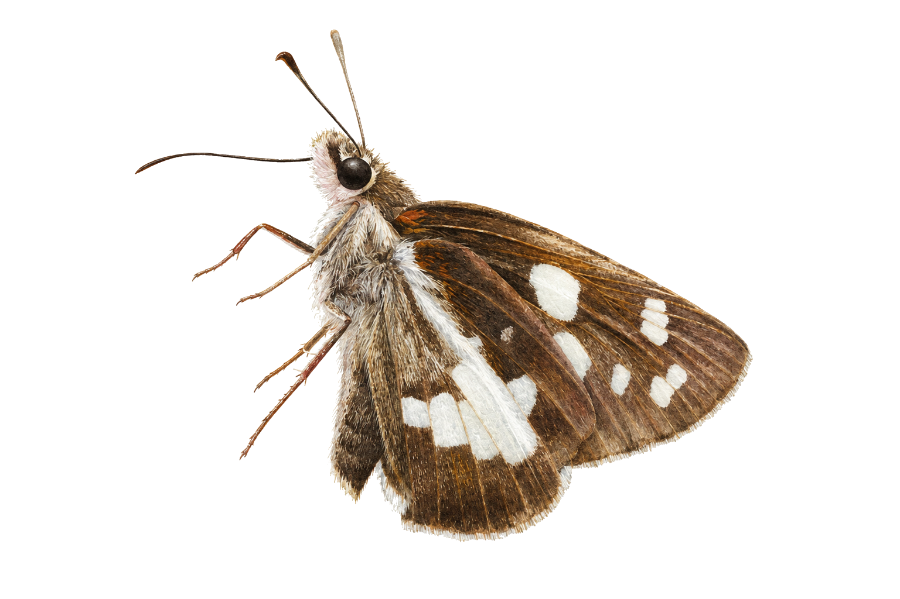

Hesperiidae · 164 / 165
Udaspes folus
Udaspes folus

বৈশিষ্ট্য ও শনাক্তকরণ
গাঢ় বাদামি ডানায় বড় সাদা দাগ, সাদা-কালোর বৈপরীত্য স্পষ্ট। কাছের প্রজাতির সঙ্গে দাগের বিন্যাস তুলনা করুন।
স্ত্রী ও পুরুষের পার্থক্য
সাধারণ ছবিতে স্পষ্ট স্ত্রী-পুরুষ পার্থক্য কম, শনাক্ত করা কঠিন।
আকার
ডানা মেলে বিস্তার ৩৮–৪৫ মিমি।
ওকিনাওয়ার দ্বীপে রেকর্ড
ওকিনাওয়া, কুমে, মিয়াকো, ইশিগাকি, ইরিওমোতে ও ইয়োনাগুনিসহ বিস্তৃত অঞ্চলে রেকর্ড আছে।
আবাসস্থল
আদা পরিবারের খাদ্যগাছযুক্ত বনপ্রান্ত, বাগান ও ঝোপ।
জীবনযাপন ও অতিরিক্ত তথ্য
এখানে স্থানীয় সংকলনের Udaspes folus ব্যবহৃত। সাম্প্রতিক কিছু সূত্রে Ancistroides folus নামে গণপরিবর্তন আছে। শীতল মৌসুমে সাদা দাগ কম বিস্তৃত হতে পারে।
শূককীট ও খাদ্য উদ্ভিদ
হলুদ, Alpinia, Hedychium, এলাচ ও মিয়োগা-সহ আদা পরিবারের গাছ খাদ্য।
তথ্যসূত্র ও সহায়ক পাঠ
- 日本の蝶：形態・雌雄差
ডেটায় উল্লেখিত সূত্র দেখার তারিখ: 2026-11-10 - 沖縄蝶類生態図鑑：オオシロモンセセリ
ডেটায় উল্লেখিত সূত্র দেখার তারিখ: 2026-11-10
তথ্য সরবরাহকৃত ডেটার উপর ভিত্তি করে তৈরি (হালনাগাদ: ১০ নভেম্বর ২০২৬)। কোনো দ্বীপের রেকর্ড সেখানে বর্তমান স্থায়ী বসবাস বা সহজে দেখা পাওয়ার নিশ্চয়তা নয়। চিত্র নির্দেশক; শনাক্তকরণে বাস্তব নমুনা ও সূত্র মিলিয়ে দেখুন।